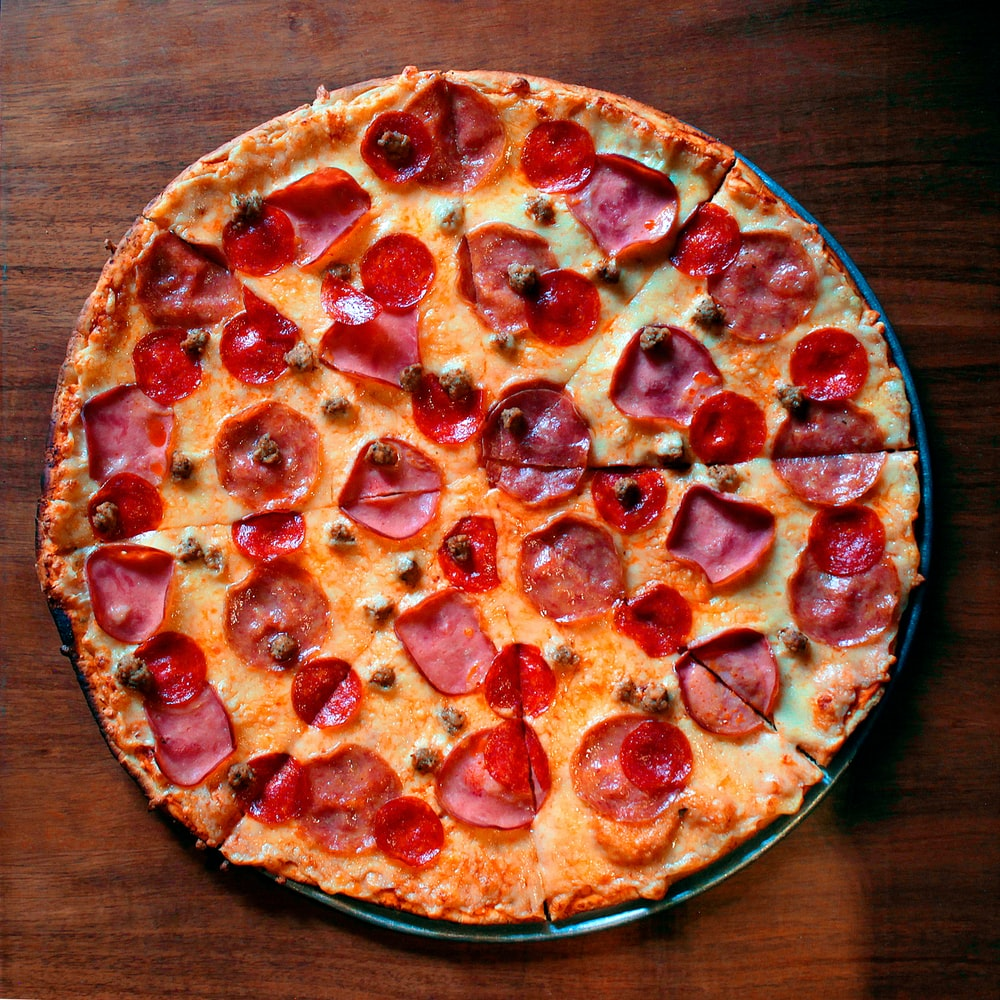
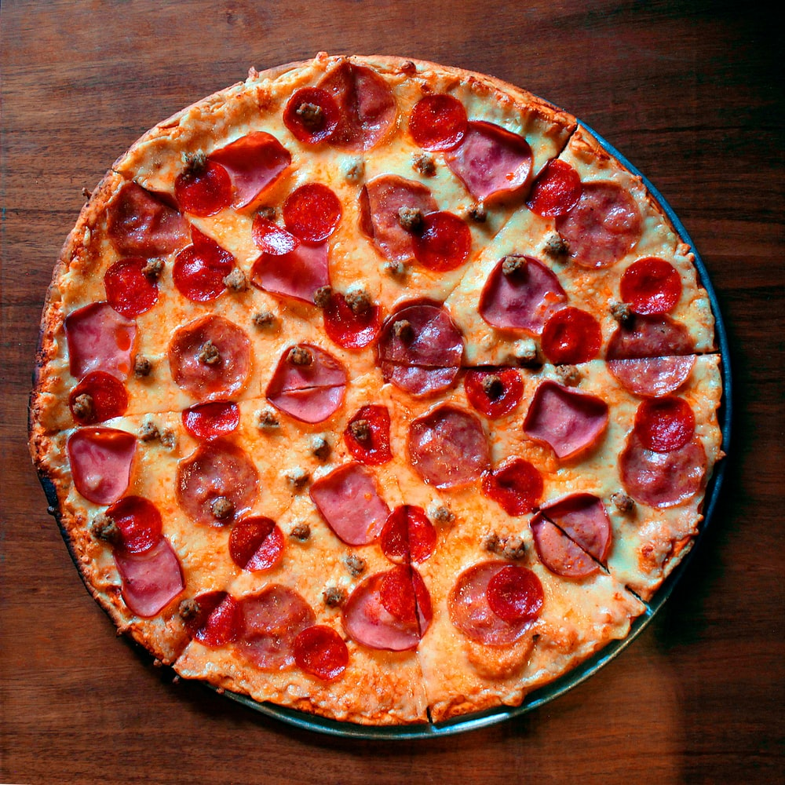

Homemade Pizza Recipes
Do you wish to make a delicious mess free pizza from the comfort of your home? Well look no further than this website. Learn how to cook the most delicous pizza your taste buds will ever come across by scrolling down
Ingredients
- 1 1/2 cups (355 ml) warm water
- 1 package (2 1/4 teaspoons) active dry yeast
- 3 3/4 cups (490g) bread flour
- 2 tablespoons extra virgin olive oil
- 2 teaspoons kosher salt
- 1 teaspoon sugar
- Extra virgin olive oil
- Tomato sauce
- Firm mozzarella cheese
Optional Ingredients
- Sliced black olives
- Pepperoni, thinly sliced
- Italian sausage, thinly sliced
- Hame, thinly sliced
Instructions
- Sprinkle the yeast over the warm water and let it sit for 5 minutes until the yeast is dissolved
- After 5 minutes stir if the yeast hasn't dissolved completely
- Make the dough by adding the flour, salt, sugar, and olive oil, and using the mixing paddle attachment, mix on low speed for a minute.
- Knead the pizza dough on low to medium speed using the dough hook about 7-10 minutes.
- Spread a thin layer of olive oil on the inside of the bowl, place the dough in the bowl, and coat the dough in the oil
- place the dough in a warm place (75°F to 85°F) for 1 1/2 hours
- Place a pizza stone on a rack in your oven
- Preheat the oven to 475°F for at least 30 minutes
- Dust your hands with flour and divide your dough into 2 spheres
- Place each in its own bowl, cover with plastic and let sit for 15 minutes
- Flatten one ball of dough at a time and create a circle until it reaches the desired diameter 10 to 12 inches.
- Do the same to the second ball of dough
- Lightly sprinkle your doughs with cornmeal
- Spoon on the tomato sauce, sprinkle with cheese, and place your desired toppings on the pizza
- Sprinkle some cornmeal on the baking stone in the oven
- Bake pizza in the 475°F oven, one at a time, until the crust is browned and the cheese is golden, about 10 to 15 minutes
- Enjoy your delicious homemade pizza
 

Storage
If you get too full from eating your yummy pizza; you can always store your pizza in the refridgerator. Make sure that when you are storing your pizza to stack each slice on top of one another with a piece of foil or wax paper between each slice. Then you can properly enjoy your pizza to its fullest potential throughout the next couple days.